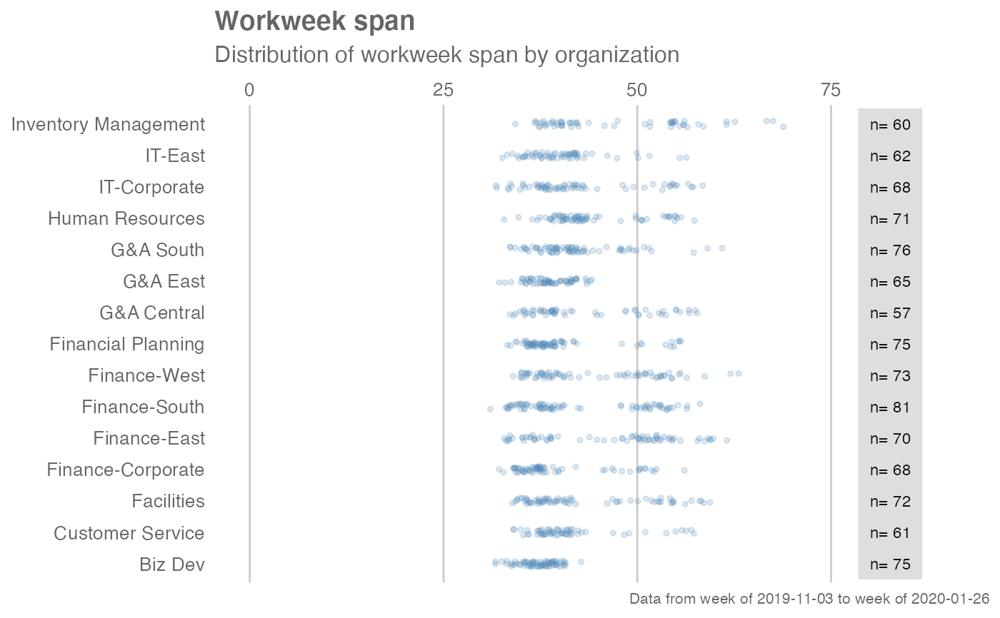

Analyze Work Week Span distribution, and returns a 'fizzy' scatter plot by default. Additional options available to return a table with distribution elements.
workloads_fizz(data, hrvar = "Organization", mingroup = 5, return = "plot")
| data | A Standard Person Query dataset in the form of a data frame. |
|---|---|
| hrvar | String containing the name of the HR Variable by which to split
metrics. Defaults to |
| mingroup | Numeric value setting the privacy threshold / minimum group size. Defaults to 5. |
| return | String specifying what to return. This must be one of the following strings:
See |
A different output is returned depending on the value passed to the return argument:
"plot": 'ggplot' object. A jittered scatter plot for the metric.
"table": data frame. A summary table for the metric.
Other Visualization:
afterhours_dist(),
afterhours_fizz(),
afterhours_line(),
afterhours_rank(),
afterhours_summary(),
afterhours_trend(),
collaboration_area(),
collaboration_dist(),
collaboration_fizz(),
collaboration_line(),
collaboration_rank(),
collaboration_sum(),
collaboration_trend(),
create_bar_asis(),
create_bar(),
create_boxplot(),
create_bubble(),
create_dist(),
create_fizz(),
create_line_asis(),
create_line(),
create_period_scatter(),
create_rank(),
create_sankey(),
create_scatter(),
create_stacked(),
create_tracking(),
create_trend(),
email_dist(),
email_fizz(),
email_line(),
email_rank(),
email_summary(),
email_trend(),
external_network_plot(),
hr_trend(),
hrvar_count(),
hrvar_trend(),
internal_network_plot(),
keymetrics_scan(),
meeting_dist(),
meeting_fizz(),
meeting_line(),
meeting_quality(),
meeting_rank(),
meeting_summary(),
meeting_trend(),
meetingtype_dist_ca(),
meetingtype_dist_mt(),
meetingtype_dist(),
meetingtype_summary(),
mgrcoatt_dist(),
mgrrel_matrix(),
one2one_dist(),
one2one_fizz(),
one2one_freq(),
one2one_line(),
one2one_rank(),
one2one_sum(),
one2one_trend(),
period_change(),
workloads_dist(),
workloads_line(),
workloads_rank(),
workloads_summary(),
workloads_trend(),
workpatterns_area(),
workpatterns_rank()
Other Workweek Span:
workloads_dist(),
workloads_line(),
workloads_rank(),
workloads_summary(),
workloads_trend()
# Return plot workloads_fizz(sq_data, hrvar = "Organization", return = "plot")# Return summary table workloads_fizz(sq_data, hrvar = "Organization", return = "table")#> # A tibble: 15 x 8 #> group mean median sd min max range n #> <chr> <dbl> <dbl> <dbl> <dbl> <dbl> <dbl> <int> #> 1 Biz Dev 37.2 37.5 2.32 31.6 42.8 11.1 75 #> 2 Customer Service 41.3 39.7 5.80 34.0 57.3 23.3 61 #> 3 Facilities 43.1 39.8 7.73 34.0 59.3 25.4 72 #> 4 Finance-Corporate 39.5 37.2 5.96 32.3 56.1 23.8 68 #> 5 Finance-East 46.3 49.3 8.65 32.7 61.6 28.8 70 #> 6 Finance-South 42.6 39.1 7.92 31.0 58.0 27.1 81 #> 7 Finance-West 44.4 41.3 7.81 33.9 63.0 29.1 73 #> 8 Financial Planning 39.9 38.0 5.80 33.2 55.5 22.3 75 #> 9 G&A Central 43.2 39.4 7.52 33.6 57.7 24.1 57 #> 10 G&A East 38.7 38.6 2.75 32.1 44.1 12.0 65 #> 11 G&A South 41.9 41.1 5.60 33.6 60.9 27.3 76 #> 12 Human Resources 44.0 42.3 5.78 32.7 57.3 24.6 71 #> 13 Inventory Management 47.3 42.4 9.28 34.2 68.9 34.7 60 #> 14 IT-Corporate 42.4 40.5 7.24 31.8 58.5 26.7 68 #> 15 IT-East 40.3 39.9 4.84 32.6 56.4 23.7 62